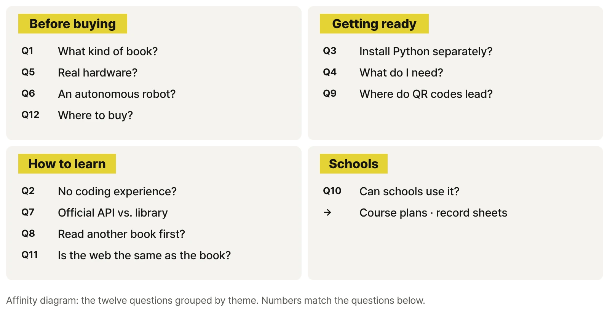

Frequently Asked Questions

Common questions to check before you pick up this book.
Q1. What kind of book is this?
It's a hands-on book about controlling robots, as a first step into physical AI. You start by driving a finished four-wheel robot with independent drive and steering in RoboCo, then follow a key press through each control layer until it becomes motion. It's CORE-01 in the Physical AI with RoboCo series, and it covers movement and control (MOVE / CONTROL).
Q2. Can I start without knowing how to code?
Yes. Chapter 1 uses Controls Mapping and no code at all. In Chapter 2 you run the start file that comes with the book, and from Chapter 11 on, Python comes in a little at a time, always tied to an actual robot setting. This isn't a full Python course.
Q3. Do I need to install Python separately?
Not for the main exercises. CORE-01 scripts run on RoboCo's built-in Python. A code editor is handy for reading and editing the start file and library.
Q4. What do I need for the exercises?
RoboCo from Steam, plus the CORE-01 practice files: two robot files, the start file c01_start.py, and the Educational Library C01_Lib. You'll find all of them, along with the record sheets, on the practice files page. Check RoboCo's Steam page for current OS support, system requirements, languages, and price.
Q5. Does it cover real robot hardware?
No. RoboCo is a robot sandbox game with a physics simulation. It doesn't model hardware problems like batteries, motor heat, wiring, or communication lag, so the book never treats its numbers as real hardware performance. What you learn instead is how to check a result: repeat the run under the same conditions and change one value at a time.
Q6. Will I build an autonomous robot that decides on its own?
No. The CORE-01 final mission is a timed route: the robot runs a list of actions, each for a set time. Sensing and reacting come in CORE-02, and autonomous behavior built on state and decisions comes in QUAD-02. CORE-01 lays the groundwork those books build on: input, control, actuators, and observation.
Q7. How is the RoboCo API different from the Educational Library?
DCMotor, ServoMotor, LED, TextScreen, and Input are RoboCo's official Python API. Names like Robot.forward() and Mission, which wrap several official calls into one action, come from the author's CORE-01 Educational Library. The book keeps the two clearly apart and uses that line to decide which layer to check when something goes wrong.
Q8. Do I need to read another volume first?
No. CORE-01 stands on its own. Each book runs on its own robot files, start file, and library, and there's no required order for the six books.
Q9. Where do the QR codes in the book lead?
Not straight to YouTube. Each QR code points to a permanent address on this site for one video ID, such as ronniekimbooks.com/ko/books/book-005/v/C01-25-00/, so the printed codes keep working even if a video moves to a new address.
Q10. Can schools and training programs use it?
Yes. Everyone works from the same robot files, start file, and record sheets, which makes it easy to repeat runs under identical conditions and compare before and after. You can pick the parts and missions that fit your course length and goals.
Q11. What is on the web companion? Is it the same as the book?
No, the website doesn't repeat the book. It holds what a printed page can't: full runs, side-by-side videos where only one value changes, failure clips, install walkthroughs, and web-only challenge missions, along with downloads, errata, and version notes. The matching chapter explains why a motion looks the way it does and how to change it.
Q12. Where can I buy it?
The Korean print edition and ebook are sold through online bookstores; the Buy page has the links. An English edition hasn't been announced yet.